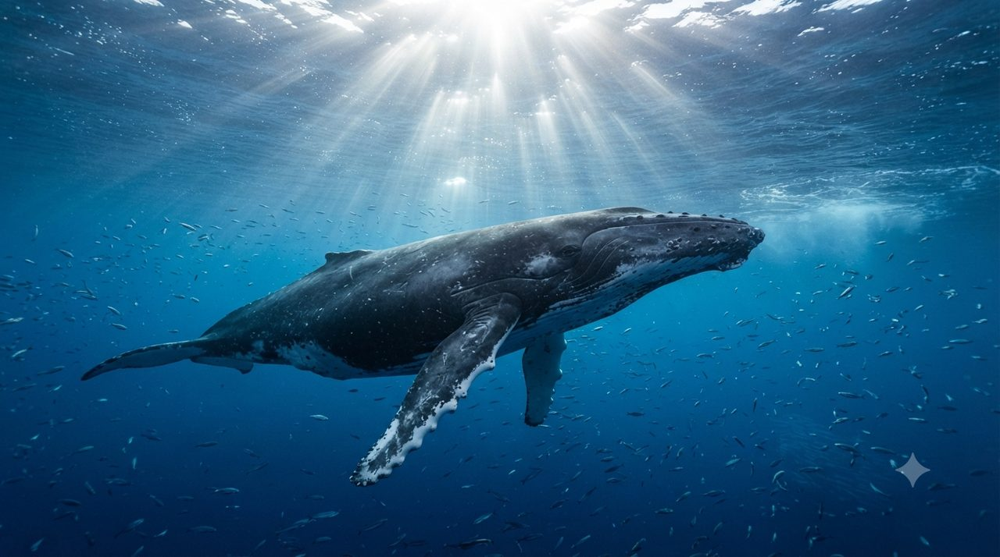

혹등고래

목차
- 개요
- 생김새
- 노래
- 사냥
- 이동
1. 개요
혹등고래는 수염고래에 속하는 큰 고래다. 다 자라면 몸길이가 12에서 16미터에 이르고, 전 세계 바다에 산다.
2. 생김새
가장 큰 특징은 몸길이의 3분의 1에 가까운 긴 가슴지느러미다. 등에 작은 혹 같은 지느러미가 있어 혹등고래라는 이름이 붙었다. 꼬리지느러미 아랫면의 무늬는 사람의 지문처럼 저마다 달라서, 연구자들은 이 무늬로 고래를 하나하나 구별한다.
3. 노래
수컷 혹등고래는 길고 복잡한 노래를 부른다. 같은 지역의 수컷들은 비슷한 노래를 부르고, 노래는 해마다 조금씩 바뀐다.
4. 사냥
여러 마리가 물고기 떼 아래를 빙글빙글 돌며 거품을 내뿜어 그물처럼 가둔 뒤, 한꺼번에 입을 벌려 삼키는 거품 그물 사냥으로 유명하다.
5. 이동
여름에는 먹이가 많은 차가운 바다에서 지내고, 겨울에는 따뜻한 바다로 수천 킬로미터를 이동해 새끼를 낳는다. 물 위로 몸을 솟구쳤다 떨어지는 모습도 자주 보여 준다.[1]
[1] 물 위로 뛰어오르는 행동을 브리칭이라고 부르며, 왜 하는지는 아직 다 밝혀지지 않았다.